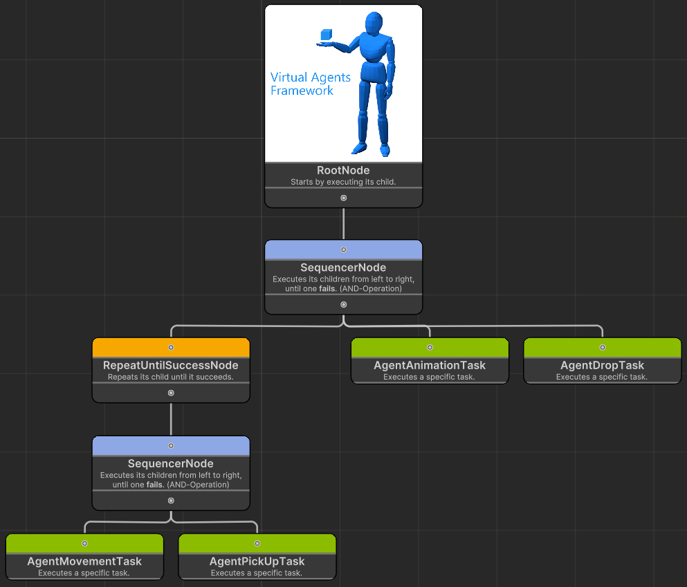
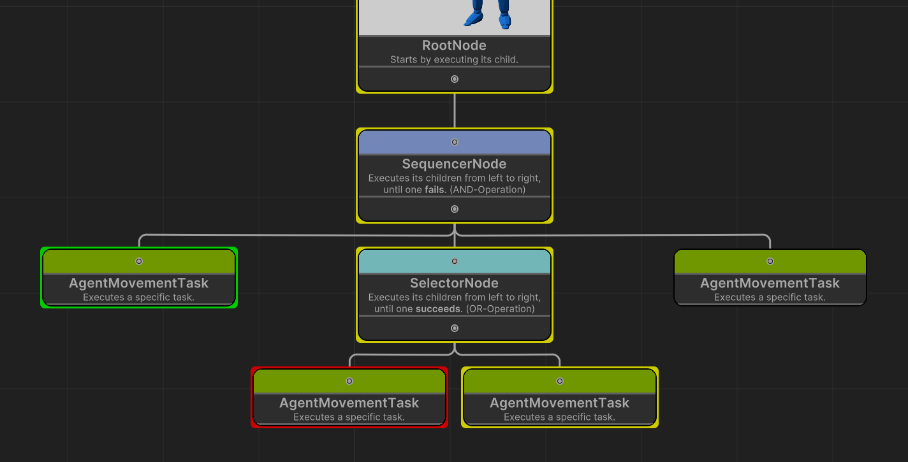

Behaviour Tree
The Behaviour Tree provides an alternative, user-friendly way to schedule tasks on an agent using a graphical interface, eliminating the need for code. An agent can either use the ScheduleBasedTaskSystem component with an associated script, as seen in the quickstart guide, or the <xref:i5.VirtualAgents.BehaviourTrees.BehaviourTreeRunner> component with a Behaviour Tree, which will be explained here.
The framework comes with a Behaviour Tree Editor window that can be used to create Behaviour Trees. The following image shows a tree in the editor.

A tree can be read from top to bottom and then from left to right. The RootNode is always connected to one node that is executed first. Every leaf node (green) represents a task for the agent to execute. The blue nodes are composite nodes that execute multiple children nodes in specific ways, here e.g. the <xref:i5.VirtualAgents.BehaviourTrees.SequencerNode>. The yellow nodes are decorator nodes that offer different functionality for traversing the tree, here e.g. the <xref:i5.VirtualAgents.BehaviourTrees.RepeatUntilSuccessNode>. Try to understand what the agent would do with this tree before continuing to read.
With this tree, the agent would first walk somewhere, then try to pick up an object. Ideally, the walking destination is the object to be picked up. If either walking or picking up fails, the agent will retry both actions. When both actions are successful, the agent will perform an animation and then drop the item.
Node types
Nodes are categorized into three types. Refer to the documentation of each node to understand how they work.
<xref:i5.VirtualAgents.BehaviourTrees.CompositeNode>s
- <xref:i5.VirtualAgents.BehaviourTrees.SequencerNode>
- <xref:i5.VirtualAgents.BehaviourTrees.SelectorNode>
- <xref:i5.VirtualAgents.BehaviourTrees.RandomNode>
<xref:i5.VirtualAgents.BehaviourTrees.DecoratorNode>s
- <xref:i5.VirtualAgents.BehaviourTrees.AlwaysSucceedNode>
- <xref:i5.VirtualAgents.BehaviourTrees.InverterNode>
- <xref:i5.VirtualAgents.BehaviourTrees.RepeatUntilSuccessNode>
- <xref:i5.VirtualAgents.BehaviourTrees.TimeOutNode>
AgentBaseTask Nodes
The tree can use all task that implement IAgentTask and ISerializable. Each attribute that should be available in the tree editor needs to be serialized and deserialized in the methods of ISerializable. See here for more.
<xref:i5.VirtualAgents.AgentTasks.BehaviourTreeTask>
There is one specific task for the Behaviour Tree, the <xref:i5.VirtualAgents.AgentTasks.BehaviourTreeTask> which allows subtrees to be added to a tree.
Note
Subtrees can only have static changes to the node attributes, e.g. no GameObjects from a scene.
Setup
All the setup and usage of the Behaviour Tree is done in the Unity Editor, and no code editing is necessary or possible, apart from creating completely new tasks.
Scene Setup
- Insert the agent prefab or an imported agent into your scene, to set up the scene correctly follow the scene setup in the quickstart guide
- Remove the ScheduleBasedTaskSystem component from the agent
- Add the <xref:i5.VirtualAgents.BehaviourTrees.BehaviourTreeRunner> to replace the ScheduleBasedTaskSystem as the TaskSystem
Note
Because the ScheduleBasedTaskSystem is removed none of the code, for example the code in the quickstart guide will work anymore. This is because only one implementation of ITaskSystem can be used per agent.
Creating Trees
- Create a new Tree by right-clicking in the project window and then
Create > Virtual Agents Framework > Behaviour Tree - Double-Click the newly created <xref:i5.VirtualAgents.BehaviourTrees.Visual.BehaviourTreeAsset> to open the tree in the tree editor
- Follow the manual on the left of the editor to create a few nodes and connect them to the RootNode
- When clicking on a node, you can change attributes in the inspector on the left that is included within the tree editor window
- You can use the auto layout button and then press the save button, move the tree editor window to the side
Connecting Tree with Scene
- Drag and drop the tree asset file into the added <xref:i5.VirtualAgents.BehaviourTrees.BehaviourTreeRunner> of the Agent
- In the editor that opens as part of the component, click on a node to change attributes here
- Do agent or scene specific changes to node attributes here. Any changes in the inspector will overwrite the values from the file, but not change the file.
Note
The tree editor window only allows static changes to be made to a tree file, so they are independent of a scene. That means that, for example to set a GameObject as a destination of a movement task, the GameObject needs to be added to the node when editing the node as part of the <xref:i5.VirtualAgents.BehaviourTrees.BehaviourTreeRunner> component in the inspector view of the agent.
Debugging a tree
When playing a scene while the tree editor is open the nodes in the tree show their current state with a colored outline.

Green means that a task was finished successfully. Yellow means that a task is currently running. Red means that a task failed. When there is no outline the task hasn't started yet.
When using multiple agents in a scene the according task states will be show when selecting the agent in the scene hierarchy.
Example Scenes
The framework contains five sample scenes demonstrating the various node types and functions of the Behaviour Tree usage. Each sample includes a scene with a documentation object, that includes more information about the scene. The five samples are:
- A small introduction sample
- A sample showing how the three types of composite nodes work
- A sample demonstrating the decorator nodes
- A sample demonstrating subtrees
- A sample demonstrating the debug capabilities
Integrating Custom Tasks into the Behaviour Tree
To make custom tasks usable within the Behaviour Tree Editor, they must implement both the IAgentTask and ISerializable interfaces.
For a general guide on implementing the IAgentTask interface, refer to the Adding Own Tasks section. The small description shown in the Behaviour Tree Editor can be change by changing <xref:i5.VirtualAgents.BaseTask.description> in the constructor of the new task.
In addition to IAgentTask, the Behaviour Tree requires the implementation of ISerializable's Serialize and Deserialize methods.
Below is an example from the AgentMovementTask demonstrating how these methods can be implemented.
public void Serialize(SerializationDataContainer serializer)
{
// Serialize attributes of the
// AgentMovementTask that are relevant for the BehaviourTree
serializer.AddSerializedData("Destination Object", DestinationObject);
serializer.AddSerializedData("Destination", Destination);
serializer.AddSerializedData("Target Speed", TargetSpeed);
serializer.AddSerializedData("Follow GameObject?", followGameObject);
}
public void Deserialize(SerializationDataContainer serializer)
{
// Replace old names, to update old tree files
serializer.Replace("TargetSpeed", "Target Speed");
serializer.Replace("FollowGameObject", "Follow GameObject?");
// Deserialize the attributes of the AgentMovementTask
DestinationObject = serializer.GetSerializedGameobjects("Destination Object");
Destination = serializer.GetSerializedVector("Destination");
TargetSpeed = serializer.GetSerializedFloat("Target Speed");
followGameObject = serializer.GetSerializedBool("Follow GameObject?");
}
These methods should handle all task attributes that are relevant to the Behaviour Tree Editor. The attributes will be displayed in the editor with the same key names and in the same order as they are called in the Serialize method.
If key names are changed, you can use serializer.Replace() in the Deserialize method to maintain compatibility with trees created using the previous names.
Important
The serializer.Replace() method should be removed once all old trees have been updated and saved again, as it adds unnecessary complexity to the Deserialize method.